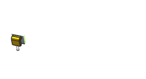
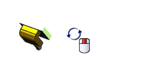
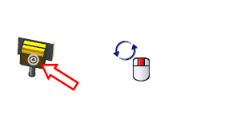

Use Fit to Work Section
-
On the View toolbar, click Clip Work Section.


A box view section has been created showing only one pin.
-
On the keyboard, hold down the Alt key, and in the graphic window background, use the center mouse button to free-rotate the view.

Notice it rotates about the view center.
-
In the graphic window background, right-click and choose Restore.
-
Release the Alt key and use the center mouse button to rotate the view.

Notice it now rotates about the center of the displayed geometry.
-
Choose Preferences→Visualization→View/Screen tab.
-
In the Session Settings group, select the Fit to Work Section
 check box and then click OK.
check box and then click OK.
-
Fit
 the view.
the view.
-
Close the part without saving.